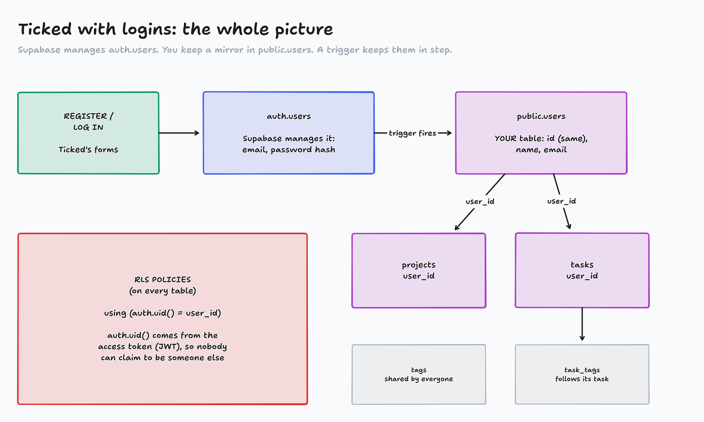
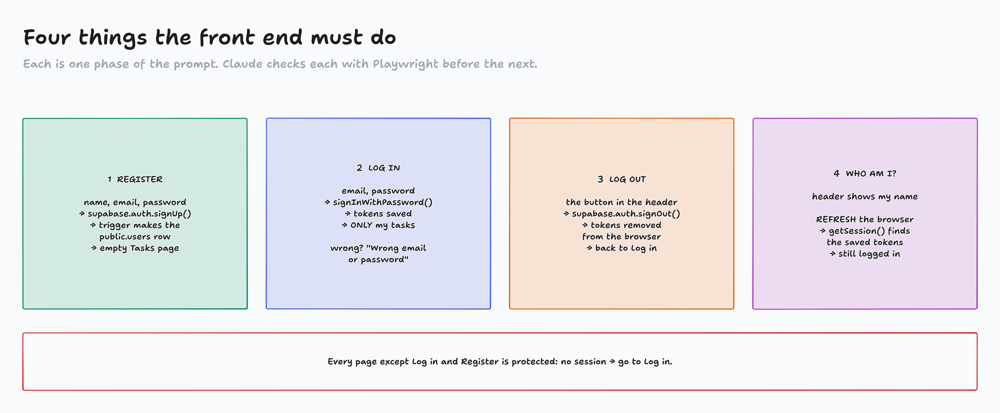

Building Applications · Authentication · Part 2 of 2
Supabase authentication
Back up, rebuild the tables for logins, then two phased prompts. By the end, Ticked knows who you are.
Today
Back up all five tables, then drop them
Supabase prompt: users ↔ auth, RLS, rebuild. Check each step.
Vite + React prompt: Register, Log in, Log out, "who am I?"
Two accounts, two browsers: each sees only their own

diagrams/AU2-01-auth-model.tldr
Live: back up, then drop
Table Editor → users → Export → Export to CSV
Same for projects, tags, tasks, task_tags
Save them in supabase/backups/ users_backup_2026-10-19.csv …
Claude drops the tables (SQL first, you approve)
Never drop what you can't restore
The backups are also context: Claude reads them to see what our data looks like.
I backed up all five tables to CSV in supabase/backups/. Using the Supabase MCP, drop every
table in the public schema (users, projects, tags, tasks, task_tags) and the
create_task_with_tags function, so the project is empty. Show me the SQL first and wait for
my approval.
The Supabase prompt
The curriculum's prompt, our paths in bold. The tables are gone now (last slide), so it starts from an empty project.
I have confirmed my application works well with this type of database schema and am now ready
to implement authentication methods to my project.
I would like you to take a look at the following resources:
1. User Journey can be found: front-end/app_outline/user_journey.md
2. The current supabase schema is as follows: supabase/schema.sql
3. The current testing data I've populated while ensuring this works is here: supabase/backups/
You should know that I've currently deleted all tables existing in my project and it is now an empty project.
Using these resources as context I would like you to conduct the following:
1. alter the user table function as an authentication table
2. ensure proper RLS policies are set where a user can only view the tasks they own.
3. recreate my database tables on supabase
After conducting each action, pause and ask for confirmation that your actions worked correctly
before proceeding to the next step.
Do you have any questions before executing this task?
Claude's questions: what we pick
Claude asks
Pick
Why
How should public.users work as the auth table?
Profile linked to auth
users.id = the auth.users id. A trigger makes the row. Delete the account → the profile goes too
What happens to the backup CSV data?
Start empty
Every row belongs to the Demo User, who has no login. The CSVs stay in supabase/backups/
Tags: what RLS rules?
Shared, any signed-in user
Tags have no user_id. Tag links (task_tags) follow the owner of their task
Policies need tables first. What order?
Users → tables → RLS
Still pauses after each step. The tables start locked (RLS on, no policies)
At the tables pause, check one thing: user_id has default auth.uid(). The app never sends it.
What Claude is writing
-- the trigger: auth.users → public.users
create trigger on_auth_user_created
after insert on auth.users
for each row
execute function public.handle_new_user();
-- every task gets its owner from the token
user_id uuid not null default auth.uid()
-- the curriculum's policy
create policy "Users can view own tasks"
on tasks
for select
to authenticated
using (auth.uid() = user_id);
-- + insert, update, delete:
-- the same check
The app never sends a user id. The token does.
When Claude pauses: check, then confirm
Claude's step
Where to look
You should see
1 users → auth table
Database → Triggers / Functions
on_auth_user_created, handle_new_user
2 recreate tables
Table Editor
5 empty tables, RLS on (locked: no policies yet). user_iddefault auth.uid()
3 RLS policies
Authentication → Policies
to authenticated, auth.uid() = user_id, no "dev:" rules
Then reply: "Confirmed, continue." You are the test for this prompt.

diagrams/AU2-02-workflows.tldr
The Vite + React prompt
Utilizing the following resources:
- Supabase db schema: supabase/schema.sql
- user journey: front-end/app_outline/user_journey.md
- Project API url: https://<id>.supabase.co
- Project API Key: sb_publishable_…
I would like you to update the functionality for the User Authentication process. Consider the
following actions a user can take:
- Register · Log In · Log out · User Confirmation (… refreshes the browser …)
Each of these actions should be an independent phase. Utilize playwright to ensure completion of
each phase prior to moving on to the next one.
Do you have any questions before completing these actions?
Full text in demo-kit/prompts.md. The publishable key is fine to paste; the secret key never is.
Activity: What comes back?
Maria owns 2 tasks, Sam owns 1. The new RLS rules are on.
A request appears: who sent it, and what?
In chat on "go": Rows, [ ], 201, 204, 401 or 403
Page: activity-what-comes-back/
Watch Claude check each phase
Playwright, per phase
Register → lands on an empty Tasks page
Log in → only that account's tasks
Log out → back to Log in
Refresh → still logged in
You check
Table Editor → users: a row per account (the trigger)
tasks.user_id = the right account
The summary's assumptions
Live: two accounts, two browsers
Normal window: register Maria, add "Leg day"
Private window: register Sam. No "Leg day".
Refresh Maria: still logged in
DevTools → Network: Authorization: Bearer eyJ…
DevTools → Application → Local Storage: the tokens. Log out: gone.
Ticked is no longer an open house
public.users mirrors auth.users through a trigger
RLS: auth.uid() = user_id, enforced by the database, not the app
Register, Log in, Log out, and still logged in after a refresh
Commit: git status (no .env!), then commit and push
The pattern: understand it → fix the data → map the workflows → a phased prompt with checks.
Homework, Part II
Priority 1, your own app: add authentication and proper RLS rules
Priority 2, Netflix Clone IV: add authentication
Priority 3, FreeCodeCamp: 100 steps of the JavaScript certification